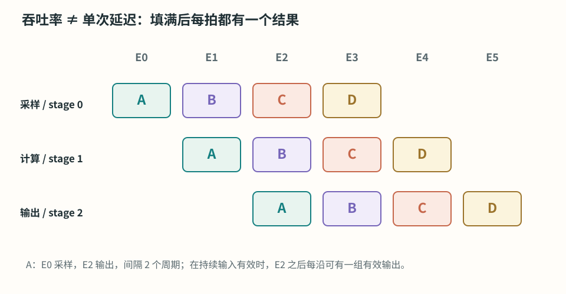
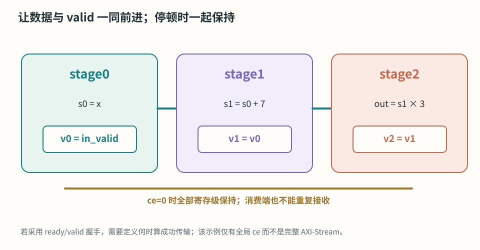

流水线：让数据和有效位一起穿过时间
用三级算术流水线建立延迟、吞吐量与有效数据的精确定义，检查停顿、位宽和输出对齐。
01 / 插入寄存器提高 Fmax，但结果需要等多久？
一个组合函数被切成三段：输入寄存器接住 A，下一拍执行第一段算术，再下一拍输出结果。第一个结果需要经过多个有效时钟沿，但流水线填满后，理论上每个沿可以输出一个结果。

要区分三个量：Latency 是特定输入被采样到对应输出有效的时钟间隔；Initiation Interval（II） 是相邻可接受输入之间的周期数；Throughput 是单位时间完成多少次有效事务。
本章三级寄存流水线在没有 stall 时，输入 A 于 E0 采样、E2 结果可见，因此采样边沿之间相差 2 个周期，也可以说它经历三个寄存阶段。表述“3 级 = 3 个周期延迟”必须先说明究竟以输入采样前、采样后还是输出检查时刻作为起点。
02 / 频率收益由最慢一级决定
对理想单时钟寄存器到寄存器路径，setup 条件可以写成：
假设组合部分共 8 ns，简单拆成两段各 4 ns，并不能得出 Fmax 恰好翻倍：还要考虑额外寄存器的 clk-to-Q、setup、时钟不确定度、放置布线、扇出和工具优化。真正的关键路径还可能被 BRAM、DSP、I/O 或某个控制信号取代。
当反馈结构（IIR、递归计算等）存在循环相关性，增加流水级可能改变算法数值关系或需要重定时。流水化不是“任意插入 FF，功能必然不变”。理论吞吐率优势应与实际约束后的 STA 报告分别说明。
03 / 三级有效位与数据必须一同推进
以下算术例子采用无符号 16 位输入，结果为 (input + 7) × 3，最大结果 196626，18 位足以表示。寄存级分别是：采样 input、加 7、乘 3。没有 valid 的时候数据寄存器也可能更新，但输出只有 out_valid=1 才有语义。

module pipe3_calc (
input wire clk, rst_n, ce, in_valid,
input wire [15:0] in_data,
output reg out_valid,
output reg [17:0] out_data
);
reg [15:0] s0;
reg [16:0] s1;
reg v0, v1;
always @(posedge clk) begin
if (!rst_n) begin
s0<=0; s1<=0; out_data<=0;
v0<=0; v1<=0; out_valid<=0;
end else if (ce) begin
s0 <= in_data; v0 <= in_valid;
s1 <= {1'b0, s0} + 17'd7; v1 <= v0;
out_data <= ({1'b0,s1} << 1) + {1'b0,s1};
out_valid <= v1;
end
end
endmodule停顿语义由全局 ce 定义：当 ce=0，所有流水级和 valid 同时保持，消费者也必须暂停消费，否则可能把保持中的输出读两次。这不是 ready/valid 的完整握手机制，因为本例没有独立 backpressure 端口。
04 / valid 错位是一种接口错误，不是数学错误
若数据已经在 stage2，而 valid 仍是 stage1 的标志，输出可能被错误地标为另一笔输入；即使单独测试数据运算都正确，事务序列仍可能错乱。
严格的验证方法是给每一个被接受的输入一个逻辑标签，放进参考队列；在输出 valid 且流水线推进的沿上，检查标签对应的结果值与先后顺序。这样可以检测漏出、重复、乱序、停顿时误消费和刷新后的陈旧数据。
| 机制 | 需要一起调整 | 常见遗漏 |
|---|---|---|
| 全局 ce 停顿 | 所有寄存级的数据与 valid | 只停数据、不停 valid |
| Flush / 取消 | 将相关级 valid 清零 | 旧结果仍被当作有效事务 |
| 资源共享 | 仲裁、每拍可接受数量 | 误认为每个级都能独占乘法器 |
| 附带元数据 | tag、keep、last 等 | 只延迟 payload，忘了标记 |
05 / 用随机输入与停顿测试数据/valid 对齐
iverilog -g2012 -Wall -s tb_pipe3_calc -o /tmp/pipe.vvp examples/rtl/pipe3_calc.v examples/tb/tb_pipe3_calc.v
vvp /tmp/pipe.vvp测试会覆盖连续输入、空泡、输入最大值 65535、连续 CE 停顿以及输出有效数据的顺序。参考模型与 DUT 的操作表达式分开编写，检查输出只在 out_valid 时有意义，并带 watchdog 防止空跑。
要进一步研究真正的流水线性能，在目标器件上对比相同功能的组合版与多级版：固定 part、约束、工具版本，收集 LUT/FF/DSP、WNS、功耗估计和路由后的关键路径报告，再报告频率结论。
为什么对 16-bit input 的 (x+7)×3 不能只保留 16 位？
最大值是 (65535+7)×3 = 196626，已经超过 65535；结果至少需要 18 个无符号位。输入、常量扩展和中间乘法宽度都需要检查。